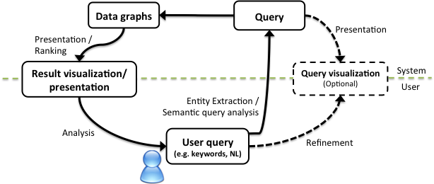

The figure below provides a way of thinking about semantic search and the potential roles for visualization within that. A user query will be specified possibly as keywords or in natural language. This query can be matched to the underlying graph of data, in order to rank and retrieve results to be returned to the user. Visualization can play two roles. First, visualization can be used to present the search results. For example, search results related to locations may be visualized on a map. Second, visualization can be used to present the query. The user may be able to refine the query by interacting directly with the visualization. Faceted search (discussed more later) would be one example of this. In this case the description of the resources returned in the search can be used to construct a range of filters based on their properties such as time, people and locations. Selecting from the facets limits the part of the data graph of interest.
The user can alter the query by manipulating the visualization. This allows them to modify the underlying SPARQL query with needing to use SPARQL directly.

Figure 36: The role of visualization in search (based on [22]).